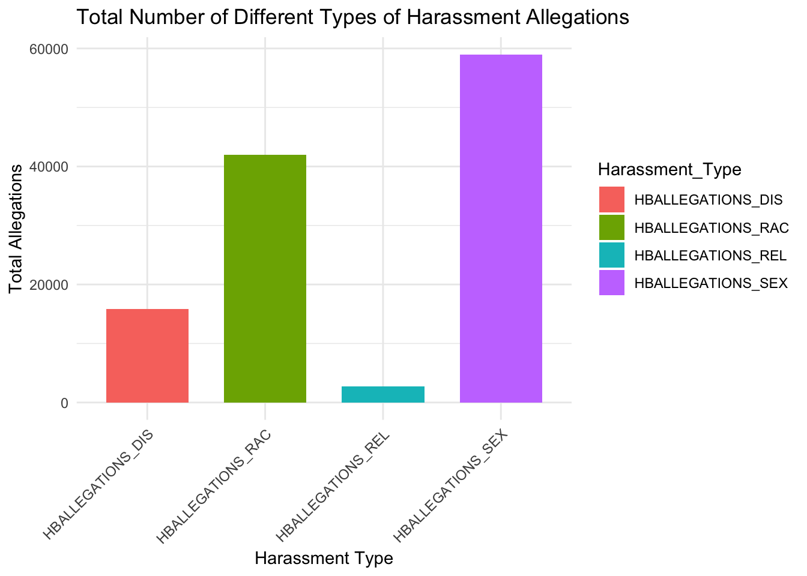

library(tidyverse)Warning: package 'purrr' was built under R version 4.3.3Warning: package 'lubridate' was built under R version 4.3.3── Attaching core tidyverse packages ──────────────────────── tidyverse 2.0.0 ──
✔ dplyr 1.1.4 ✔ readr 2.1.5
✔ forcats 1.0.0 ✔ stringr 1.5.1
✔ ggplot2 3.5.1 ✔ tibble 3.2.1
✔ lubridate 1.9.4 ✔ tidyr 1.3.1
✔ purrr 1.0.4
── Conflicts ────────────────────────────────────────── tidyverse_conflicts() ──
✖ dplyr::filter() masks stats::filter()
✖ dplyr::lag() masks stats::lag()
ℹ Use the conflicted package (<http://conflicted.r-lib.org/>) to force all conflicts to become errorsdata <- read_csv("dataset/clean_data file/Harassment_and_Bullying_clean.csv")Warning: One or more parsing issues, call `problems()` on your data frame for details,
e.g.:
dat <- vroom(...)
problems(dat)Rows: 98010 Columns: 159
── Column specification ────────────────────────────────────────────────────────
Delimiter: ","
chr (5): LEA_STATE, LEA_STATE_NAME, LEA_NAME, NAME, JJ
dbl (154): LEAID, SCHID, COMBOKEY, HBALLEGATIONS_SEX, HBALLEGATIONS_ORI, HBA...
ℹ Use `spec()` to retrieve the full column specification for this data.
ℹ Specify the column types or set `show_col_types = FALSE` to quiet this message.harassment_vars <- c("HBALLEGATIONS_SEX", "HBALLEGATIONS_RAC",
"HBALLEGATIONS_DIS", "HBALLEGATIONS_REL")
data_clean <- data %>%
mutate(across(all_of(harassment_vars), ~ ifelse(. < 0, NA, .)))
harassment_summary <- data_clean %>%
summarise(across(all_of(harassment_vars), ~ sum(., na.rm = TRUE))) %>%
pivot_longer(cols = everything(), names_to = "Harassment_Type", values_to = "Total_Allegations")
ggplot(harassment_summary, aes(x = Harassment_Type, y = Total_Allegations, fill = Harassment_Type)) +
geom_bar(stat = "identity", width = 0.7) +
theme_minimal() +
labs(
title = "Total Number of Different Types of Harassment Allegations",
x = "Harassment Type",
y = "Total Allegations"
) +
theme(axis.text.x = element_text(angle = 45, hjust = 1))